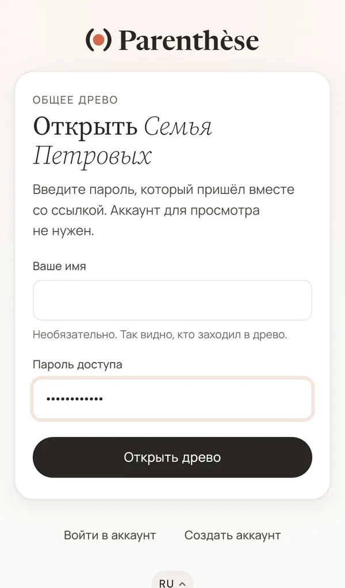
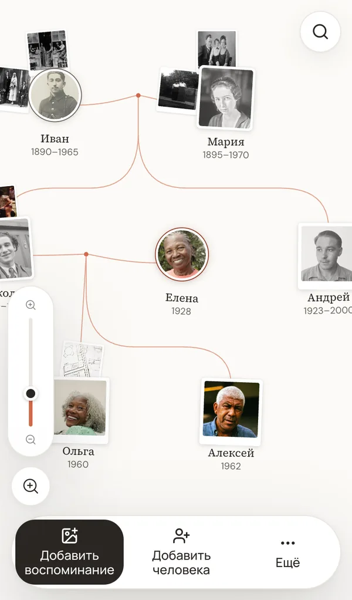
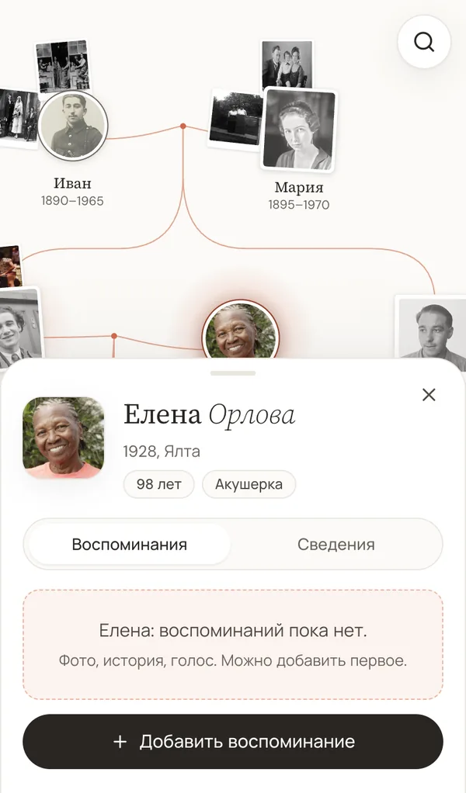
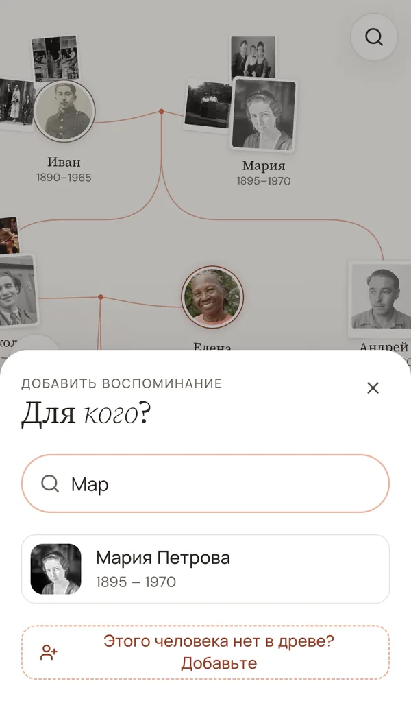
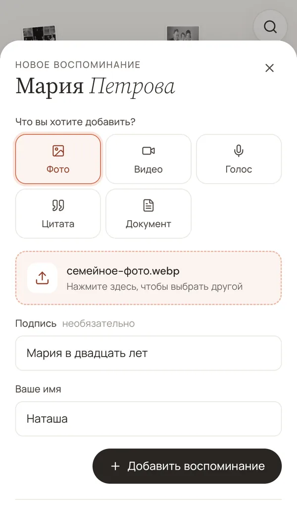
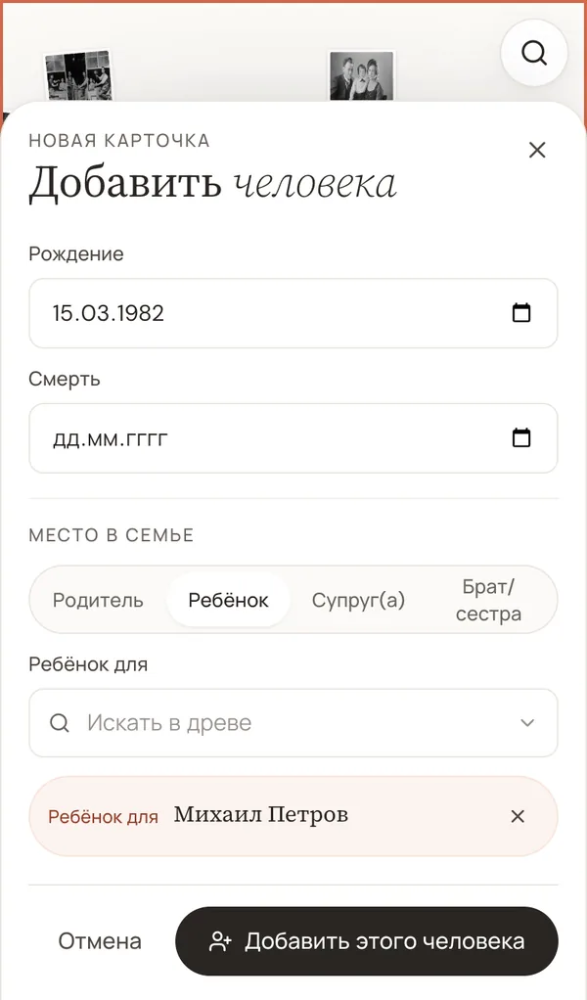
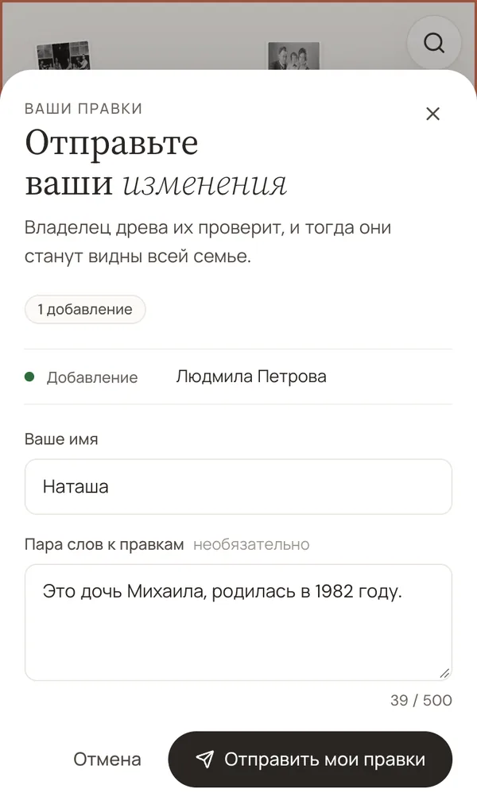
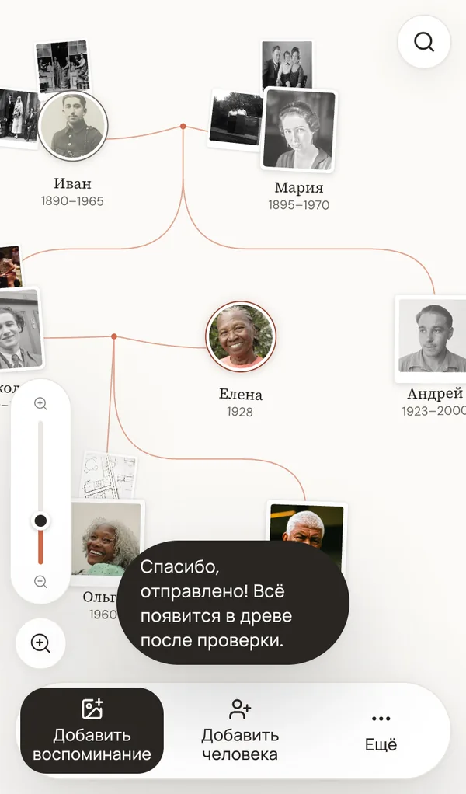

Вам прислали ссылку на семейное древо
Кто-то из вашей семьи собрал древо в Parenthèse и приглашает вас его посмотреть и дополнить. Ничего не нужно устанавливать, аккаунт тоже не нужен. Вот как всё устроено, шаг за шагом, на телефоне или на компьютере.
1. Откройте древо
Нажмите на ссылку, которую вам прислали по почте, в SMS, WhatsApp или Telegram. Откроется страница с названием древа.
Введите пароль, который пришёл вместе со ссылкой, с заглавными буквами в точности как в сообщении, и нажмите «Открыть древо». Сохраните сообщение со ссылкой и паролем, оно понадобится, чтобы вернуться.

2. Осмотритесь
В первый раз появится короткое приветствие. Нажмите «Смотреть древо», чтобы его закрыть.
Каждый портрет — это человек из вашей семьи. Чтобы перемещаться, ведите по древу пальцем. Чтобы приблизить, разведите два пальца на экране, а чтобы увидеть больше, сведите их. Лупа в правом верхнем углу находит человека по имени.
Нажмите на портрет, чтобы открыть карточку этого человека: фото, воспоминания и даты. Крестик вверху карточки её закрывает.


3. Добавьте воспоминание
Воспоминание — это фото, видео, запись голоса, любимая фраза человека или документ, например письмо или открытка.
- Нажмите «Добавить воспоминание» внизу экрана.
- Введите первые буквы имени человека и нажмите на его портрет.
- Выберите, что добавляете, например «Фото», и нажмите «Выбрать файл». Телефон покажет ваши фотографии, нажмите на нужную.
- Если хотите, добавьте подпись: год, место, кто на фото. Ещё напишите своё имя, чтобы родные знали, кто поделился.
- Нажмите «Добавить воспоминание». Появится сообщение, что всё отправлено.


Можно начать и с карточки: нажмите на портрет человека, а потом на «Добавить воспоминание» под его фотографиями.
4. Добавьте недостающего человека
- Нажмите «Добавить человека» внизу экрана.
- Напишите имя и фамилию, а если знаете, то и даты.
- Укажите, кем он приходится тому, кто уже есть в древе. Выберите «Родитель», «Ребёнок», «Супруг(а)» или «Брат/сестра», введите имя этого человека и нажмите на него в списке.
- Нажмите «Добавить этого человека». Откроется окно с вашим именем и полем для пояснения, если хотите что-то объяснить. Нажмите «Отправить мои правки».


5. Что дальше
Владелец древа получает то, что вы отправили, проверяет и добавляет. После этого ваши фото, воспоминания и добавленные люди появятся у всей семьи. Больше ничего делать не нужно.
Если заметили неверную дату или ошибку в имени, проще всего написать тому, кто прислал вам ссылку.

Частые вопросы
Я потерял(а) пароль
Спросите у того, кто прислал вам ссылку. Пароль есть у него в древе, на панели «Поделиться и проверить».
Пароль не подходит
Проверьте заглавные буквы и что до или после пароля нет лишнего пробела. Если всё равно не подходит, возможно, пароль сменили. Попросите новый у владельца древа.
Нужно ли создавать аккаунт?
Нет. Ссылки и пароля достаточно, чтобы смотреть древо и добавлять воспоминания. Аккаунт нужен только для того, чтобы возвращаться к древу, не вводя пароль заново.
Это работает на компьютере?
Да. Те же кнопки находятся в правом нижнем углу экрана. Чтобы приблизить древо, крутите колёсико мыши, а чтобы открыть карточку, нажмите на портрет.
Фото не загружается
Фото может весить до 5 МБ, а видео до 20 МБ. Если файл не принимается, отправьте версию поменьше или попросите кого-нибудь из родных добавить его за вас.
Кто видит древо?
Только те, у кого есть ссылка и пароль. Поисковые системы древо не показывают. Подробности на странице о данных и конфиденциальности (на английском).